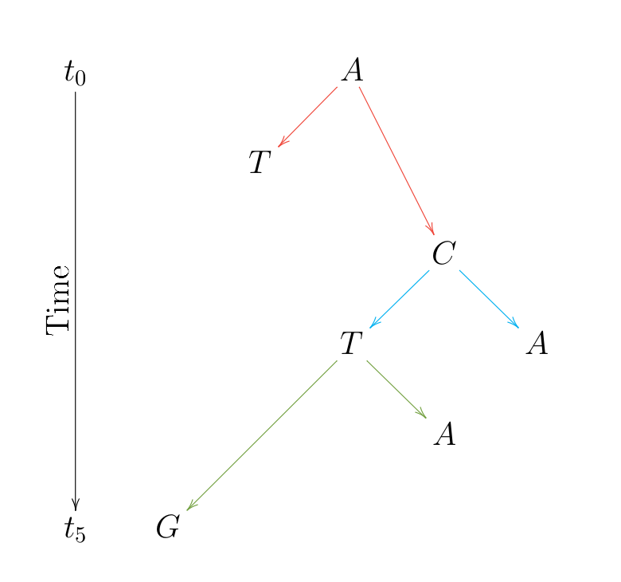
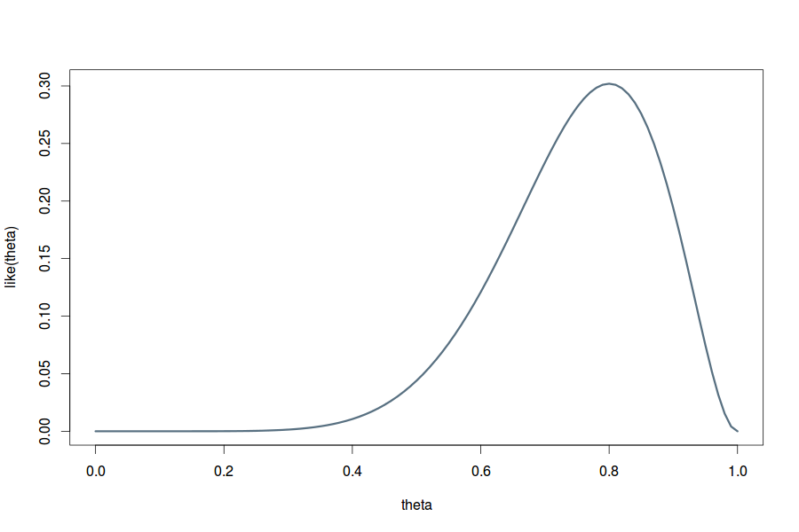
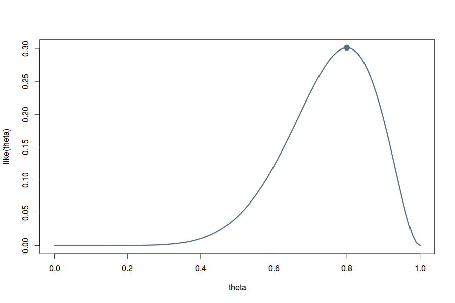

Evolutionary Models and Likelihood Methods
Informal introduction to Markov Models in molecular phylogenetics
About me
- Studied Applied Mathematics at Lodz University of Technology
- Postdoctoral researcher at the lab of Philippe Lemey
- Enthusiast of data visualization, parallel and distributed computing
- Author of πBUSS, Imp and SpreaD3
Cuban Bioinformatics Workshop on
Virus Evolution and Molecular Epidemiology
Slides can be downloaded from:
https://github.com/fbielejec/veme2016
Slides are also availiable online:
http://fbielejec.github.io/veme2016
Molecular evolution
The process of random change in the sequence composition of cellular molecules, such as DNA, over time.
Stochastic process
The (discrete) stochastic process $X$ is a collection $\left\{ X(t):\; t\in T\right\} $, where each value $X(t)$ is a random variable drawn from a discrete state space $\mathcal{E}$, with $K$ possible values, indexed by orderer time $T$.
Evolution as a stochastic process


Phylogenetic tree
Directed, bifurcating graph depicting relationship.
Phylogenetic tree implies a character substitution process leading to observed tip states
Character substitution process
- Single nucleotide $X(t)$ randomly drawn at time $t \geq 0$ is the smallest unit of evolution.
- The collection of possible values which $X(t)$ can take defines the state-space $\mathcal{E}=\left\{ A,C,G,T\right\}$.
- Conditional probabilities of a change in the sequence at time $t \geq 0$ are described by a stochastic matrix: $\mathbf{P}(t)=\left[\begin{array}{cccc} A\rightarrow A & {\color{red}A\color{red}\rightarrow \color{red}C} & {\color{green}A\color{green}\rightarrow \color{green}G} & {\color{blue}A\color{blue}\rightarrow \color{blue}T}\\ {\color{red}C\color{red}\rightarrow \color{red}A} & C\rightarrow C & {\color{cyan}C\color{cyan}\rightarrow \color{cyan}G} & {\color{magenta}C\color{magenta}\rightarrow \color{magenta}T}\\ {\color{green}G\color{green}\rightarrow \color{green}A} & {\color{cyan}G\color{cyan}\rightarrow \color{cyan}C} & G\rightarrow G & {\color{yellow}G\color{yellow}\rightarrow \color{yellow}T}\\ {\color{blue}T\color{blue}\rightarrow \color{blue}A} & {\color{magenta}T\color{magenta}\rightarrow \color{magenta}C} & {\color{yellow}T\color{yellow}\rightarrow \color{yellow}G} & T\rightarrow T \end{array}\right]$
- Single entry is a conditional probability: ${\color{red}A\color{red}\rightarrow \color{red}C}:\quad \forall u\geq 0 \quad p_{AC}(t)=P\left\{ X\left(t+u\right)=C\mid X(u)=A\right\}$
Example - modelling the number and waiting times of DNA mutations with a Poisson process
Poisson process
- Let's assume that evolution at a single site is governed by a Poisson process $N$ with some intensity $r$.
- Under this model the number of mutations $N(t+u)-N(u)$ in some time interval $(u,t+u]$ of length $t$ follows a Poisson distribution with expected number of events $r t$.
- The waiting time between any two mutations is exponentially distributed with parameter $r$, thus the average waiting time between the occurrence of events is $1/r$.
Sample trajectory of a Poisson process
- See the R script
Continuous time Markov chain models
Phylogenetic hypothesis testing calls for a model which not only models the number of events (mutations), but also the actual probabilities of changing states at the particular site in the alignment.
CTMC is defined by three elements:
- State space $\mathcal{E}$ defining the allowed values.
- Transition matrix $P$ with entries: $p_{ij}=P\left\{ X\left(t_{n+1}\right)=j|X\left(t_{n}\right)=i\right\}$ defining probabilities of moving to the state $j$ from state $i$ over time $t_{n+1}-t_{n}$.
- Initial distribution $\mathbf{\Pi}=\{\pi_{i},\ i\in\mathcal{E}\}$ defining probabilities of being in any one of the allowed states at the initial iteration.
Continuous time Markov chain models

CTMC is a stochastic process of sequential transitions from one state to another, within an allowed set of states $X(t_{0})\rightarrow X(t_{1})\rightarrow\ldots\rightarrow X(t_{n})\rightarrow\ldots$
Simplifying assumptions:
- Markov property: $P\left\{ X(t_{n+1}) = i_{n+1}\mid X(t_{n})=i_{n},\ldots, X(t_{0})=i_{0}\right\} = P\left\{ X(t_{n+1}) = i_{n+1}\mid X(t_{n})=i_{n}\right\}$
- Homogeneity: $\forall i,j\in \mathcal{E} \quad p_{ij}\left(t\right) = p_{ij}\left(0,t\right) = p_{ij}\left(u,t+u\right)$
- Stationarity: $\forall j\in\mathcal{E} \quad \exists\pi_{j}>0 \quad \forall i\in\mathcal{E}\quad\underset{t\rightarrow\infty}{lim}p_{ij}(t)=\pi_{j}$
- Time-reversibility: $\forall i,j\in \mathcal{E} \quad \pi_{i}p_{ij}(t)=\pi_{j}p_{ji}(t)$
Example: JC69 substitution model
- The simplest model of nucleotide substitution [Jukes and Cantor, 1969]
- Transition probabilities are given by: $p_{ij}\left(t\right)=\begin{cases} \frac{1}{4}+\frac{3}{4}e^{-4\theta t} & \text{if }i=j\\ \frac{1}{4}-\frac{1}{4}e^{-4 \theta t} & \text{otherwise} \end{cases}$
Example: JC69 substitution model
- Let's assume the state is $G$ now
- What is the probability the state will change to $T$ in $0.01$ units of time? Or 0.05? or 0.1?
- Because of the homogeneity assumption it is not neccessary to run the chain sequentially through all iterations to predict a state in the future.
- We can predict the n-th iteration by raising the transition matrix $P$ to the n-th power and multiplying the result by the distribution of the initial state $\mathbf{\Pi}^{0}$:
$P\left\{ X\left(t_{n}\right)\right\} =\mathbf{\Pi}^{0}\times P^{n}$
Example: JC69 substitution model
- Here we see that at time $0.025$ the probability of $T$ is $\approx21\%$
- After approx time $0.05$ the chain reaches its stationary distribution:
- $\mathbf{\Pi}=\left\{ \pi_{T}=0.25,\pi_{C}=0.25,\pi_{A}=0.25,\pi_{G}=0.25\right\}$
- What happens if we change the initial state distribution? See the R script.
Maximum Likelihood (ML) approach
Maximum Likelihood approach
With the probabilistic model of evolution and its parameters, we can calculate the probability of any observed character sequence data.
Some data $D$ was generated by a model with a parameter $\theta$. The conditional probability of observing the data $\mathrm{Pr}(D \, | \, \theta)$, considered as a function of $\theta$ is called the likelihood function and denoted $\mathrm{L}(\theta \, | \, D)$.
Maximum Likelihood Estimate
Likelihood is a function of parameter $\theta$:
$\mathrm{Pr}(D \, | \, \theta)=\mathrm{L}(\theta \, | \, D)$
To maximize the likelihood means to find a best parameter $\hat{\theta}$ which maximizes $\mathrm{L}(\theta \, | \, D)$. Such a parameter is then called the Maximum Likelihood Estimate (MLE).
Example: Coin tosses
Let us consider a coin with head and tail, which is flipped $10$ times, and lands on it's head $8$ times:
$H,H,H,T,H,H,H,H,H,T,H$
How to model the probability of such an outcome?
- Data: $D=\left(k=8,n=10\right)$.
- Parameter: probability $\theta$ of landing a head.
- Likelihood: given by the Binomial distribution: $$\mathrm{L}(\theta \, | \, k,n) = \left(\begin{array}{c} \begin{array}{c} n\\ k \end{array}\end{array}\right) \, \theta^k \, (1-\theta)^{n-k}.$$
Example: Coin tosses

Curve presents the likelihood function for the coin tosses example: $\mathrm{L}(\theta \, | \, k=8,n=10)$.
Would you say the coin is fair?
See the R script
Example: Coin tosses

Curve presents the likelihood function for the coin tosses example: $\mathrm{L}(\theta \, | \, k=8,n=10)$.
The MLE: $\hat{\theta}=\frac{8}{10}=0.8$
How to find the MLE?
How to find the MLE?
In simple cases can be done analytically:
${\displaystyle \log L(\theta\,|\, k,n)=\log\binom{n}{k}+x\log(\theta)+(n-k)\log(1-\theta)}$ ${\displaystyle \frac{\partial\log L(\theta\,|\,8,10)}{\partial\theta}=\frac{8}{\theta}-\frac{10-8}{1-\theta}}=0\;\Longleftrightarrow\;\theta=0.8$
How to find the MLE?
Typically accomplished by numerical routines like Newton-Raphson.
Newton-Raphson (one dimension)
Let's apply the Newton Raphson method to find the parameter $\theta$ which maximizes the function: $f(\theta)=\frac{e^{\theta}}{(1+e^{\theta})^{2}}$
Method starts with a function $f$, the function's derivative $f'$ (gradient), second order derivative $f''$ (hessian) and an initial guess $\theta_{0}$ for the optimum of $f$.
At every iteration: $\theta_{n+1}=\theta_{n}-\frac{f'\left(\theta_{n}\right)}{f''\left(\theta_{n}\right)}$ until some convergence criteria is reached.
Let's see it in action!
Maximum Likelihood in phylogenetics
Maximum Likelihood in phylogenetics
In phylogenetic analysis, the parameter $\theta$ is multidimensional and comprises:
- Parameters of the evolutionary model, possibly multiple.
- Tree topology.
- Branch lengths.
This makes ML a high dimensional optimization problem that usually cannot be solved in one go and instead a stepwise procedure is involved.
Likelihood of a sequence evolution on a tree

Tree pruning [Felsenstein 1981]: recursive algorithm for calculating likelihood of a (observed) sequence on a tree.
Partial likelihood $L_{i}(x_{i})$ of observing data at the descendants of node $i$ given state $x_{i}$ at node $i$ expressed in terms of partial likelihoods at nodes $j$ and $k$.
Finding branch lengths
Branch lengths $b$ can computed numerically by maximizing the log-likelihood of the whole alignment $X$, which is a sum of the log-likelihoods at the particular sites: $l(b | X,\tau)=\underset{j=1}{\overset{l}{\sum}}log\left(L(b | \mathbf{x}_{j},\tau)\right)$
This means finding those branch lengths for tree $\tau$ which maximize the log-likelihood function.
Finding model parameters
- Model parameters $\Theta$ can be estimated similarly to estimating branch lengths.
- Using the observed alignment and a fixed tree find the parameters which maximize the log-likelihood:
$l(\Theta|X,\tau,b)$
Searching through tree topology space
Finding the tree topology that maximizes the likelihood of observing tip sequence requires a search through the space of all possible tree topologies.
Impossible, but in the smallest cases
Heuristic tree search methods (not discussed here).
Assessing evolutionary trees and models
Are two evolutionary trees/models different?
We already know how given a sequence alignment data and a substitution models to reconstruct trees and compute their likelihoods.
But can we decide from the likelihood:
- Which substitution model better fits the data?
- Which reconstructed tree is better (in terms of their likelihoods)?
- Whether one tree likelihood is significantly better/worse?
These questions can be assesed by performing hypothesis tests.
Likelihood ratio test (LRT)
If two models are nested (like TN in GTR), their log-likelihood difference $2\left(l\left(\text{GTR}\right)-l\left(\text{TN}\right)\right)$ follows a $\chi^{2}$ distribution with degrees of freedom equal to the number of additional parameters ($df = 3$).
If the observed value falls into the extreme 5% interval (shaded area), we say the more complex model (GTR) is significatly better than the simpler (TN).
$H_{0}$: both models are equally good.
$H_{A}$: the more complex model is better.
Testing tree topologies
Two different topologies are not nested, thus, we cannot use the $\chi^{2}$ distribution.
Hence, bootstrap-based methods have been applied to determine the distribution of log-likelihood differences for testing.
Bootstrap - basic idea
- Compute log-likelihood values $l_{1},\ldots,l_{N}$ for tree topologies $\tau_{1},\ldots,\tau_{N}$.
- Draw bootstrap samples $i$ from the alignment, re-estimate the log-likelihood values $l_{X}^{\left(i\right)}$ for each tree $T_{x}$ and for each sample $i$.
- Center the log-likelihoods with the mean $\overline{l}_{X}^{\left(i\right)}$ by setting $\tilde{l}_{X}^{\left(i\right)}=l_{X}^{\left(i\right)}-\overline{l}_{X}^{\left(i\right)}$.
- Use the differences between the $\tilde{l}_{X}^{\left(i\right)}$ to determine the non-parametric distribution of differences: $\delta^{\left(i\right)}=\tilde{l}_{Y}^{\left(i\right)}-\tilde{l}_{Z}^{\left(i\right)}$.
- Use the distribution of $\delta^{\left(i\right)}$ to test the trees.